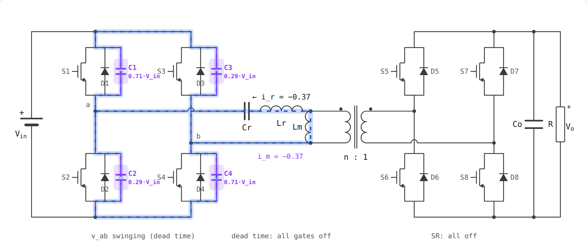
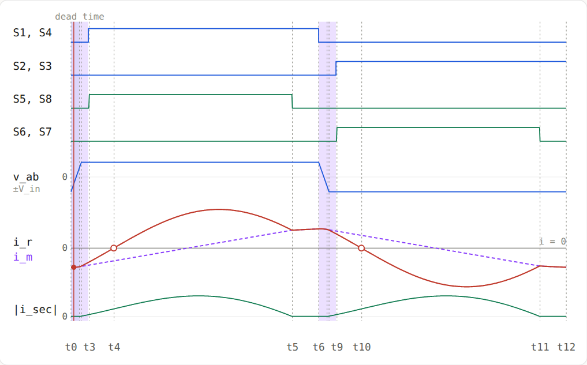
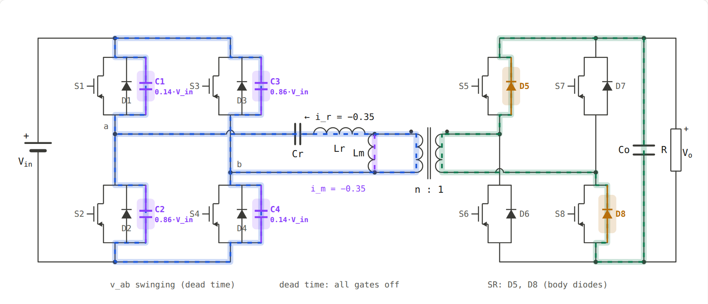
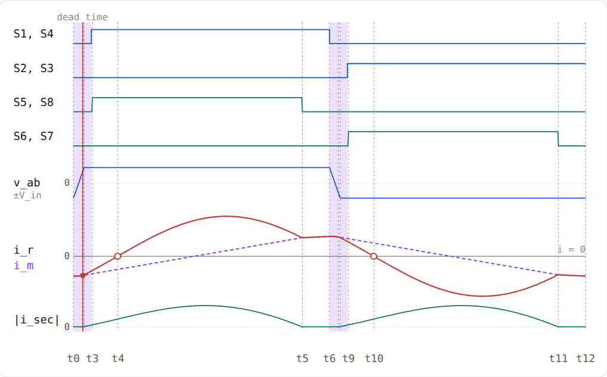
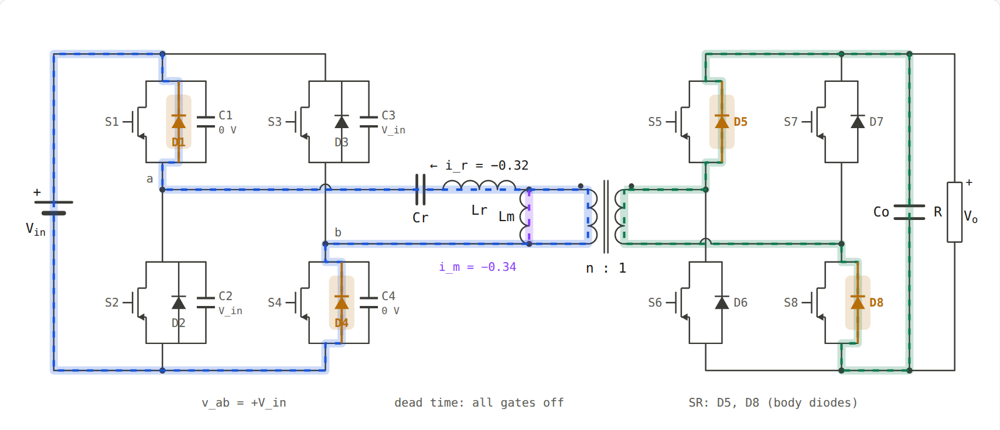
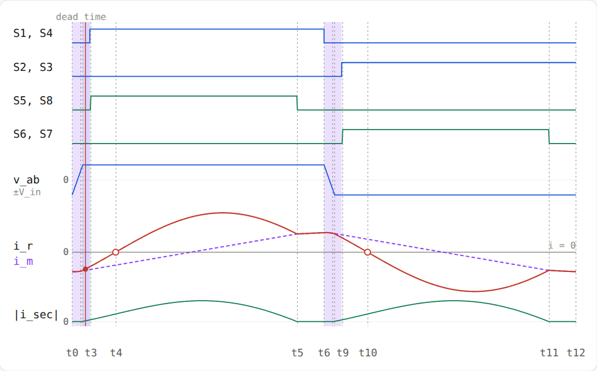
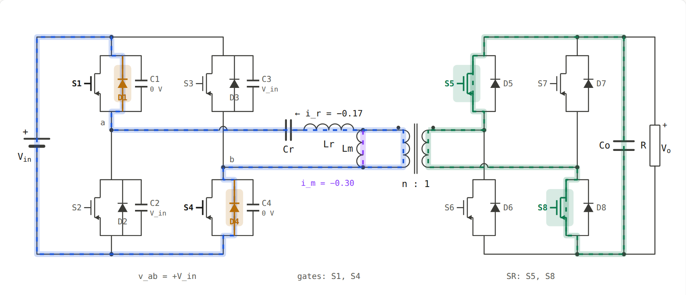
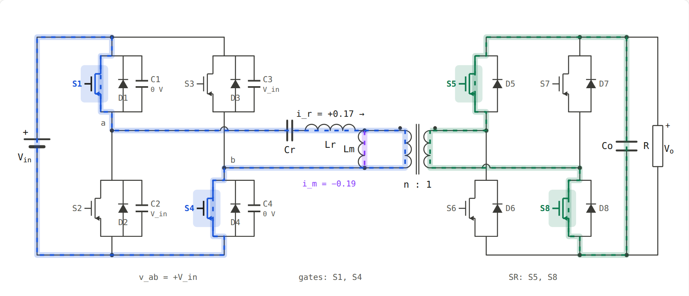
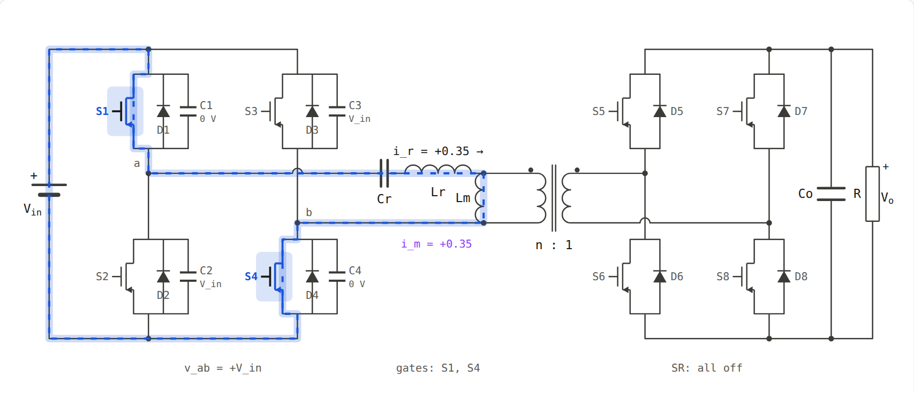

<title>LLC Interval Walkthrough</title>
<meta name="viewport" content="width=device-width, initial-scale=1, viewport-fit=cover">
<link rel="preconnect" href="https://fonts.googleapis.com">
<link rel="stylesheet" href="https://fonts.googleapis.com/css2?family=IBM+Plex+Sans:ital,wght@0,400;0,500;0,600;1,400&family=IBM+Plex+Mono:wght@400;500;600&display=swap">
<style>
:root {
  --bg: #faf9f7;
  --panel: #ffffff;
  --panel2: #f2f1ed;
  --border: rgba(0,0,0,0.09);
  --text: #1a1a18;
  --text2: #55554f;
  --text3: #8c8c84;
  --blue: #1a56db;
  --blue-dim: rgba(26,86,219,0.10);
  --green: #0d7a4e;
  --green-dim: rgba(13,122,78,0.10);
  --amber: #a8620a;
  --amber-dim: rgba(183,110,10,0.12);
  --purple: #7a35e0;
  --purple-dim: rgba(138,63,252,0.10);
  --sans: 'IBM Plex Sans', system-ui, -apple-system, 'Segoe UI', sans-serif;
  --mono: 'IBM Plex Mono', ui-monospace, Menlo, monospace;
}
@media (prefers-color-scheme: dark) {
  :root:not([data-theme="light"]) {
    color-scheme: dark;
    --bg: #131412; --panel: #1b1c1a; --panel2: #242522;
    --border: rgba(255,255,255,0.10);
    --text: #ecebe6; --text2: #b0afa7; --text3: #7d7c75;
    --blue: #7aa2ff; --blue-dim: rgba(122,162,255,0.14);
    --green: #45c790; --green-dim: rgba(69,199,144,0.14);
    --amber: #f0a646; --amber-dim: rgba(240,166,70,0.14);
    --purple: #b58cff; --purple-dim: rgba(181,140,255,0.14);
  }
}
:root[data-theme="dark"] {
  color-scheme: dark;
  --bg: #131412; --panel: #1b1c1a; --panel2: #242522;
  --border: rgba(255,255,255,0.10);
  --text: #ecebe6; --text2: #b0afa7; --text3: #7d7c75;
  --blue: #7aa2ff; --blue-dim: rgba(122,162,255,0.14);
  --green: #45c790; --green-dim: rgba(69,199,144,0.14);
  --amber: #f0a646; --amber-dim: rgba(240,166,70,0.14);
  --purple: #b58cff; --purple-dim: rgba(181,140,255,0.14);
}
* { box-sizing: border-box; }
body { margin: 0; background: var(--bg); color: var(--text); font: 16px/1.7 var(--sans); }
.wrap { max-width: 980px; margin: 0 auto; padding-inline: 20px; padding-block: 28px 70px; display: grid; gap: 34px; }
header { display: grid; gap: 10px; }
.eyebrow { font: 500 12px/1 var(--mono); letter-spacing: 0.08em; text-transform: uppercase; color: var(--text3); }
h1 { margin: 0; font-size: clamp(25px, 3.6vw, 33px); line-height: 1.25; font-weight: 600; text-wrap: balance; }
h2 { margin: 0; font-size: 21px; line-height: 1.35; font-weight: 600; text-wrap: balance; }
h3 { margin: 0; font-size: 16.5px; font-weight: 600; }
p { margin: 0; }
.lede { color: var(--text2); font-size: 17px; max-width: 70ch; }
section { display: grid; gap: 14px; }
.prose { display: grid; gap: 12px; max-width: 74ch; }
ul, ol { margin: 0; padding-left: 24px; display: grid; gap: 6px; }
.m { font-family: var(--mono); font-size: 0.9em; white-space: nowrap; }
.eq { font-family: var(--mono); font-size: 14px; background: var(--panel2); border-radius: 8px; padding: 12px 16px; overflow-x: auto; white-space: pre; line-height: 1.8; }
.panel { background: var(--panel); border: 1px solid var(--border); border-radius: 12px; }
.note { border-left: 4px solid var(--amber); background: var(--amber-dim); padding: 12px 16px; border-radius: 0 8px 8px 0; }
.key { border-left: 4px solid var(--green); background: var(--green-dim); padding: 12px 16px; border-radius: 0 8px 8px 0; }
.concepts { display: grid; grid-template-columns: repeat(2, minmax(0, 1fr)); gap: 12px; }
@media (max-width: 760px) { .concepts { grid-template-columns: 1fr; } }
.concepts .panel { padding: 14px 16px; display: grid; gap: 6px; align-content: start; }
.concepts h3 { font-size: 15.5px; }
.concepts p { font-size: 15px; color: var(--text2); }
table { border-collapse: collapse; width: 100%; font-size: 14.5px; }
th, td { text-align: left; padding: 9px 12px; border-bottom: 1px solid var(--border); vertical-align: top; }
th { font: 500 11.5px/1.2 var(--mono); letter-spacing: 0.06em; text-transform: uppercase; color: var(--text3); }
.tbl { overflow-x: auto; }
.tbl table { min-width: 660px; }
.chip { display: inline-block; font-family: var(--mono); font-size: 13px; font-weight: 600; padding: 1px 7px; border-radius: 5px; }
.c-s { color: var(--blue); background: var(--blue-dim); }
.c-d { color: var(--amber); background: var(--amber-dim); }
.c-r { color: var(--green); background: var(--green-dim); }
.c-m { color: var(--purple); background: var(--purple-dim); }
.iv { padding: 20px; display: grid; gap: 16px; }
.iv-head { display: flex; flex-wrap: wrap; gap: 10px 14px; align-items: baseline; }
.iv-tag { font-family: var(--mono); font-weight: 600; font-size: 14px; color: var(--blue); background: var(--blue-dim); padding: 4px 10px; border-radius: 6px; }
.imgs { display: grid; grid-template-columns: minmax(0, 1.25fr) minmax(0, 1fr); gap: 12px; }
@media (max-width: 800px) { .imgs { grid-template-columns: 1fr; } }
.imgs figure { margin: 0; display: grid; gap: 4px; }
.imgs img { width: 100%; height: auto; border: 1px solid var(--border); border-radius: 8px; background: #fff; }
.imgs figcaption { font-size: 13px; color: var(--text3); }
.grid2 { display: grid; grid-template-columns: repeat(2, minmax(0, 1fr)); gap: 14px 22px; }
@media (max-width: 760px) { .grid2 { grid-template-columns: 1fr; } }
.grid2 > div { display: grid; gap: 6px; align-content: start; }
.path { display: flex; flex-wrap: wrap; gap: 4px 6px; align-items: center; font-family: var(--mono); font-size: 13.5px; }
.path span { background: var(--panel2); padding: 2px 8px; border-radius: 5px; }
.path i { font-style: normal; color: var(--text3); }
.path + .path { margin-top: -4px; }
nav.toc { padding: 14px 18px; display: grid; gap: 6px; }
nav.toc a { color: var(--blue); text-decoration: none; }
nav.toc a:hover { text-decoration: underline; }
a:focus-visible { outline: 2px solid var(--blue); outline-offset: 2px; }
</style>

<main class="wrap">
  <header>
    <div class="eyebrow">2.LLC · companion to the “LLC Full-Bridge Operation” animation</div>
    <h1>Full-bridge LLC with synchronous rectifier, interval by interval</h1>
    <p class="lede">This walks through the circuit in the animation: the active full bridge S1–S4 on the primary, the resonant tank Cr–Lr–Lm, an n:1 transformer, and the synchronous rectifier S5–S8 on the secondary. It starts with the basic ideas you need. Then it splits one switching period into six intervals and, for each one, says which device conducts, where the current flows, what the voltages are, which equation governs it, and why the interval ends.</p>
  </header>

  <nav class="panel toc" aria-label="Contents">
    <b>Contents</b>
    <a href="#basics">1. Basics you need first</a>
    <a href="#circuit">2. The circuit and sign conventions</a>
    <a href="#summary">3. One period at a glance</a>
    <a href="#half1">4. Intervals 1 to 6 (first half period)</a>
    <a href="#half2">5. The second half period</a>
    <a href="#design">6. Design results and formulas</a>
  </nav>

  <section id="basics">
    <h2>1. Basics you need first</h2>
    <div class="concepts">
      <div class="panel">
        <h3>An inductor's current cannot jump</h3>
        <p><span class="m">v = L·di/dt</span>. The voltage across an inductor sets the slope of its current. If a switch opens, the inductor keeps its current flowing and forces it into whatever path is left. All of ZVS comes from this.</p>
      </div>
      <div class="panel">
        <h3>A capacitor's voltage cannot jump</h3>
        <p><span class="m">i = C·dv/dt</span>. To change a capacitor's voltage by ΔV you must move a charge <span class="m">Q = C·ΔV</span> into or out of it. A current I does that in a time <span class="m">t = C·ΔV / I</span>.</p>
      </div>
      <div class="panel">
        <h3>A MOSFET has three current paths</h3>
        <p>1) The <b>channel</b>: when the gate is on it conducts in both directions like a small resistor R<sub>ds(on)</sub>. 2) The <b>body diode</b>: always there, conducts only from source to drain, with about 0.7 V drop. 3) The <b>output capacitance C<sub>oss</sub></b>, from drain to source. When the switch is off and its voltage changes, current flows into or out of this capacitor. In the animation these are drawn as C1–C4.</p>
      </div>
      <div class="panel">
        <h3>ZVS and why it matters</h3>
        <p>Zero-voltage switching means the MOSFET turns on when its drain–source voltage is already about zero. If it turns on at voltage V instead, the charge in C<sub>oss</sub> is dumped into the channel and <span class="m">½·Coss·V²</span> is lost, every cycle. That loss scales with frequency. ZVS removes it, which is what lets an LLC run at high frequency.</p>
      </div>
      <div class="panel">
        <h3>ZCS</h3>
        <p>Zero-current switching means a device turns off when its current has already reached zero. For a rectifier it means no reverse recovery. Below resonance, the LLC gives its synchronous rectifier ZCS turn-off.</p>
      </div>
      <div class="panel">
        <h3>Dead time</h3>
        <p>The upper and lower switch of one leg must never be on together, or they short V<sub>in</sub>. So after one pair turns off, all switches stay off for a short time. During that time the tank current moves the switch-node voltages by charging and discharging C<sub>oss</sub>. In this simulation the dead time is 3.5% of the period.</p>
      </div>
      <div class="panel">
        <h3>Two resonant frequencies</h3>
        <p>When the rectifier conducts, Lm is clamped by the output voltage and only Lr and Cr resonate: <span class="m">fr = 1/(2π√(Lr·Cr))</span>. When the rectifier is off, Lm joins in: <span class="m">fm = 1/(2π√((Lr+Lm)·Cr))</span>, which is much slower.</p>
      </div>
      <div class="panel">
        <h3>What Lm does</h3>
        <p>Lm is the transformer's magnetizing inductance. Its current i<sub>m</sub> never reaches the output and carries no power. But i<sub>m</sub> is what charges and discharges C<sub>oss</sub> during the dead time, so it is what makes ZVS possible. Smaller Lm gives surer ZVS but more circulating current and conduction loss.</p>
      </div>
    </div>
  </section>

  <section id="circuit">
    <h2>2. The circuit and sign conventions</h2>
    <div class="prose">
      <ul>
        <li><b>V<sub>in</sub></b>: DC input.</li>
        <li><b>S1–S4</b>: the primary active full bridge. <span class="chip c-s">S1</span>/<span class="chip c-s">S2</span> form the left leg with midpoint a, and <span class="chip c-s">S3</span>/<span class="chip c-s">S4</span> the right leg with midpoint b. Each switch has a body diode (D1–D4) and an output capacitance (<span class="chip c-m">C1</span>–<span class="chip c-m">C4</span>). The switches work in diagonal pairs, S1·S4 and S2·S3, each for 50% of the period.</li>
        <li><b>v<sub>ab</sub></b>: the voltage from a to b. With S1·S4 on, a is tied to the + rail and b to the − rail, so <span class="m">vab = +Vin</span>. With S2·S3 on, <span class="m">vab = −Vin</span>. The bridge makes a ±V<sub>in</sub> square wave.</li>
        <li><b>Cr, Lr</b>: series resonant capacitor and inductor. Cr also blocks DC so the transformer cannot saturate.</li>
        <li><b>Lm</b>: magnetizing inductance, in parallel with the primary winding.</li>
        <li><b>n:1 transformer</b>: ideal. The secondary current is <span class="m">n·(ir − im)</span>.</li>
        <li><b>S5–S8</b>: the synchronous (active) rectifier. S5·S8 conduct in one half period, S6·S7 in the other.</li>
        <li><b>Co, R</b>: output capacitor and load at V<sub>o</sub>.</li>
      </ul>
      <p><b>Positive directions.</b> i<sub>r</sub> is positive when it flows from a into Cr and Lr (arrow to the right in the animation). i<sub>m</sub> is positive flowing down through Lm. Secondary current is positive when it leaves the dotted end of the secondary.</p>
      <p><b>Coss voltages.</b> Each capacitor's voltage follows from the two switch-node voltages: C1 sits between the + rail and a, C2 between a and the − rail, C3 between the + rail and b, and C4 between b and the − rail. So <span class="m">vC1 = Vin − va</span>, <span class="m">vC2 = va</span>, <span class="m">vC3 = Vin − vb</span>, <span class="m">vC4 = vb</span>. The animation prints these next to each capacitor.</p>
      <p><b>Operating point used here:</b> <span class="m">fs = 0.85·fr</span> (below resonance), <span class="m">Q = 0.4</span>, <span class="m">Ln = Lm/Lr = 5</span>. The resulting gain is <span class="m">n·Vo/Vin = 1.10</span>. Currents quoted below are in the animation's normalized units.</p>
    </div>
  </section>

  <section id="summary">
    <h2>3. One period at a glance</h2>
    <p class="prose">A switching period has two halves: S1·S4 in the first, S2·S3 in the second. Each half has six intervals. The second half is the mirror image of the first, so the six intervals of the first half are described in full.</p>
    <div class="panel tbl">
      <table>
        <thead><tr><th>Interval</th><th>Name</th><th>Primary conducts</th><th>Secondary conducts</th><th>v<sub>ab</sub></th></tr></thead>
        <tbody>
          <tr><td class="m">t0→t1</td><td>Coss transition, rectifier off</td><td><span class="chip c-m">C1–C4</span></td><td>nothing</td><td class="m">−Vin → +Vin</td></tr>
          <tr><td class="m">t1→t2</td><td>Coss transition, secondary starts</td><td><span class="chip c-m">C1–C4</span></td><td><span class="chip c-d">D5</span> <span class="chip c-d">D8</span> body diodes</td><td class="m">−Vin → +Vin</td></tr>
          <tr><td class="m">t2→t3</td><td>Body diodes clamp</td><td><span class="chip c-d">D1</span> <span class="chip c-d">D4</span></td><td><span class="chip c-d">D5</span> <span class="chip c-d">D8</span></td><td class="m">+Vin</td></tr>
          <tr><td class="m">t3→t4</td><td>ZVS window</td><td>S1·S4 gated, reverse current</td><td><span class="chip c-r">S5</span> <span class="chip c-r">S8</span></td><td class="m">+Vin</td></tr>
          <tr><td class="m">t4→t5</td><td>Power transfer</td><td><span class="chip c-s">S1</span> <span class="chip c-s">S4</span></td><td><span class="chip c-r">S5</span> <span class="chip c-r">S8</span></td><td class="m">+Vin</td></tr>
          <tr><td class="m">t5→t6</td><td>Magnetizing current only</td><td><span class="chip c-s">S1</span> <span class="chip c-s">S4</span></td><td>nothing</td><td class="m">+Vin</td></tr>
        </tbody>
      </table>
    </div>
    <div class="key">Reading the images: blue is primary current and a conducting primary switch, amber a conducting body diode, purple the magnetizing current and the Coss capacitors while they charge, and green the secondary current and a conducting SR MOSFET. A bold switch label means its gate is on.</div>
  </section>

  <section id="half1">
    <h2>4. Intervals of the first half period</h2>

    <article class="panel iv">
      <div class="iv-head"><span class="iv-tag">t0 → t1</span><h3>Interval 1: dead time begins, Coss transition, rectifier off</h3></div>
      <div class="imgs">
        <figure><figcaption>All four primary switches off. The tank current splits: half through C3 and C1 over the + rail, half through C4 and C2 over the − rail. Here C1 is at 0.71·V<sub>in</sub> and falling, C2 at 0.29·V<sub>in</sub> and rising.</figcaption></figure>
        <figure><figcaption>The purple band is the dead time. v<sub>ab</sub> is ramping up.</figcaption></figure>
      </div>
      <div class="grid2">
        <div>
          <b>Before t0</b>
          <p>At the end of the previous half period, S2 and S3 were on and only magnetizing current flowed. At t0 that current, i<sub>r</sub> = i<sub>m</sub>, is at its negative peak, about <span class="m">−0.37</span> here.</p>
        </div>
        <div>
          <b>At t0</b>
          <p>S2 and S3 are turned off. S1 and S4 are not turned on yet, because this is the dead time. All four primary switches are off.</p>
        </div>
      </div>
      <div class="prose">
        <p><b>Where does the current go?</b> Lr and Lm, now in series, keep the current flowing. i<sub>r</sub> is negative, so current comes out of the tank into node a and leaves node b back into the tank. With no channel open and no diode forward-biased yet, the only paths are the four output capacitances. The current splits into two equal halves:</p>
        <div class="path"><i>top half:</i><span>tank</span><i>→</i><span>a</span><i>→</i><span>C1 ↑</span><i>→</i><span>+ rail</span><i>→</i><span>C3 ↓</span><i>→</i><span>b</span><i>→</i><span>tank</span></div>
        <div class="path"><i>bottom half:</i><span>tank</span><i>→</i><span>a</span><i>→</i><span>C2 ↓</span><i>→</i><span>− rail</span><i>→</i><span>C4 ↑</span><i>→</i><span>b</span><i>→</i><span>tank</span></div>
        <ul>
          <li><span class="chip c-m">C1</span> (across S1) <b>discharges</b> from V<sub>in</sub> to 0 V.</li>
          <li><span class="chip c-m">C2</span> (across S2) <b>charges</b> from 0 V to V<sub>in</sub>.</li>
          <li><span class="chip c-m">C3</span> (across S3) <b>charges</b> from 0 V to V<sub>in</sub>.</li>
          <li><span class="chip c-m">C4</span> (across S4) <b>discharges</b> from V<sub>in</sub> to 0 V.</li>
        </ul>
        <p>So node a rises from 0 to V<sub>in</sub> and node b falls from V<sub>in</sub> to 0, and v<sub>ab</sub> ramps from <span class="m">−Vin</span> to <span class="m">+Vin</span>. No switch does this. The inductor current does it, and V<sub>in</sub> carries no current during this time. The energy that was stored in C1 and C4 is not lost: it goes back into the inductor and into C2 and C3.</p>
        <p><b>Why the two halves are equal.</b> Node a connects to the tank, C1 and C2, and nothing else. With C1 = C2, both see the same dv/dt (one voltage rising, the other falling), so they take equal currents. The same holds for C3 and C4 at node b.</p>
        <p><b>Secondary:</b> the voltage across Lm is still below nV<sub>o</sub>, so no secondary device is forward biased. The secondary current is zero, <span class="m">ir = im</span>, and Co alone feeds the load.</p>
      </div>
      <div class="eq">each node must move by Vin:     Q = 2·Coss·Vin        (C1 + C2 at node a)
current available:              Im = |im| at t0
transition time:                t_tr ≈ 2·Coss·Vin / Im
ZVS needs:                      t_tr ≤ t_dead</div>
      <div class="prose">
        <p><b>Why it ends.</b> As v<sub>ab</sub> rises, the voltage across Lm rises with it. When it reaches <span class="m">+n·Vo</span>, the body diodes of S5 and S8 become forward biased and the secondary starts to conduct. That moment is t1.</p>
      </div>
      <div class="note"><b>Design note.</b> If I<sub>m</sub> is too small (Lm too large) or the dead time too short, v<sub>ab</sub> has not reached +V<sub>in</sub> when the dead time ends. S1·S4 then turn on with some voltage left on C1 and C4, and part of the ZVS benefit is lost.</div>
    </article>

    <article class="panel iv">
      <div class="iv-head"><span class="iv-tag">t1 → t2</span><h3>Interval 2: Coss transition continues, secondary starts in the body diodes</h3></div>
      <div class="imgs">
        <figure><figcaption>C1 and C4 are almost empty (0.14·V<sub>in</sub>). On the secondary, the body diodes of S5 and S8 conduct.</figcaption></figure>
        <figure><figcaption>|i<sub>sec</sub>| (green, bottom) starts to rise from zero.</figcaption></figure>
      </div>
      <div class="prose">
        <p><b>Primary:</b> still dead time. The two half-currents keep charging C2, C3 and discharging C1, C4 until v<sub>ab</sub> reaches +V<sub>in</sub>.</p>
        <p><b>Secondary:</b> the voltage across Lm has reached nV<sub>o</sub>, so secondary current has started. The gates of S5 and S8 are still off, for two reasons:</p>
        <ol>
          <li>The SR controller first has to see the drain–source voltage go negative, which shows the body diode is conducting, and then turn the gate on after a short delay.</li>
          <li>In this model the SR gates are also held off during the primary dead time, for safety.</li>
        </ol>
        <p>So the secondary current flows through the body diodes <span class="chip c-d">D5</span> and <span class="chip c-d">D8</span>:</p>
        <div class="path"><span>secondary (dot)</span><i>→</i><span>D5 ↑</span><i>→</i><span>+ rail</span><i>→</i><span>Co ∥ R</span><i>→</i><span>− rail</span><i>→</i><span>D8 ↑</span><i>→</i><span>secondary</span></div>
        <p><b>What changes in Lm.</b> From now on the voltage across Lm is clamped to <span class="m">+n·Vo</span>, so i<sub>m</sub> rises in a straight line (dashed purple trace).</p>
      </div>
      <div class="eq">Lm clamped:          dim/dt = +n·Vo / Lm          (linear ramp)
secondary current:   i_sec = n·(ir − im)
SR diode loss:       P ≈ Vf · i_sec   (Vf ≈ 0.7 V, so this interval should be short)</div>
      <div class="prose"><p><b>Why it ends.</b> When v<sub>ab</sub> reaches +V<sub>in</sub>, C1 and C4 are empty, so the body diodes D1 and D4 become forward biased and hold the voltage there. That moment is t2.</p></div>
    </article>

    <article class="panel iv">
      <div class="iv-head"><span class="iv-tag">t2 → t3</span><h3>Interval 3: body diodes D1 and D4 clamp v<sub>ab</sub> at +V<sub>in</sub></h3></div>
      <div class="imgs">
        <figure><figcaption>C1 and C4 are at 0 V and C2 and C3 at V<sub>in</sub>. D1 and D4 carry the primary current, D5 and D8 the secondary.</figcaption></figure>
        <figure><figcaption>v<sub>ab</sub> is flat at +V<sub>in</sub>. Still inside the dead time.</figcaption></figure>
      </div>
      <div class="prose">
        <p><b>Primary.</b> The capacitors have finished moving: C1 and C4 are at 0 V, C2 and C3 at V<sub>in</sub>. i<sub>r</sub> is still negative, so it needs a path, and the only one left is the body diodes <span class="chip c-d">D1</span> and <span class="chip c-d">D4</span>:</p>
        <div class="path"><span>tank</span><i>→</i><span>a</span><i>→</i><span>D1 ↑</span><i>→</i><span>Vin (+)</span><i>→</i><span>Vin (−)</span><i>→</i><span>D4 ↑</span><i>→</i><span>b</span><i>→</i><span>tank</span></div>
        <p>The current flows into the + terminal of V<sub>in</sub>, so energy is going back from the tank to the source: the instantaneous input power <span class="m">vab·ir</span> is negative.</p>
        <p><b>The key point of this interval:</b> the drain–source voltage of S1 and S4 is only about <span class="m">−0.7 V</span>. Turning their gates on now costs almost nothing. That is ZVS.</p>
        <p><b>Secondary:</b> same as before. D5 and D8 conduct and i<sub>m</sub> keeps ramping up.</p>
      </div>
      <div class="prose"><p><b>Why it ends.</b> The dead time ends and S1·S4 get their gate signal (t3). At the same moment the SR controller turns on S5·S8.</p></div>
    </article>

    <article class="panel iv">
      <div class="iv-head"><span class="iv-tag">t3 → t4</span><h3>Interval 4: ZVS window, gates on but current still reversed</h3></div>
      <div class="imgs">
        <figure><figcaption>S1·S4 are gated on. On the secondary, S5·S8 conduct through their channels.</figcaption></figure>
        <figure><figcaption>i<sub>r</sub> (red) is still below zero and rising toward it.</figcaption></figure>
      </div>
      <div class="prose">
        <p><b>Primary.</b> S1 and S4 are now on. i<sub>r</sub> is still negative, so the current flows through them in reverse, from source to drain. With the gate on, most of this reverse current moves from the body diode into the <b>channel</b>, because I·R<sub>ds(on)</sub> is smaller than the diode drop. The animation still labels it as the body diode. What matters is that the switch voltage is zero and the turn-on was lossless.</p>
        <p>Energy is still flowing back into V<sub>in</sub>, because <span class="m">vab = +Vin</span> while <span class="m">ir &lt; 0</span>. This is the circulating, or reactive, part of the current.</p>
        <p><b>Secondary.</b> <span class="chip c-r">S5</span> and <span class="chip c-r">S8</span> are on and the secondary current flows through their channels. They also turned on with ZVS, because their body diodes were already conducting. The loss is now <span class="m">i²·Rds(on)</span> instead of <span class="m">Vf·i</span>, which is the whole point of synchronous rectification.</p>
      </div>
      <div class="eq">tank (Lm clamped, only Lr and Cr resonate):
  Lr · dir/dt  = Vin − vCr − n·Vo
  Cr · dvCr/dt = ir
  → ir is a sine at fr = 1/(2π√(Lr·Cr)), rising here</div>
      <div class="prose"><p><b>Why it ends.</b> i<sub>r</sub> crosses zero and turns positive (t4, the open circle on the zero line in the waveform view).</p></div>
    </article>

    <article class="panel iv">
      <div class="iv-head"><span class="iv-tag">t4 → t5</span><h3>Interval 5: power transfer</h3></div>
      <div class="imgs">
        <figure><figcaption>S1·S4 conduct forward, and S5·S8 deliver current to the output. The Coss capacitors are idle.</figcaption></figure>
        <figure><figcaption>i<sub>r</sub> rises as a sine. The gap between i<sub>r</sub> and i<sub>m</sub> is the output current.</figcaption></figure>
      </div>
      <div class="prose">
        <p><b>Primary.</b> i<sub>r</sub> is positive and <span class="chip c-s">S1</span>, <span class="chip c-s">S4</span> conduct in the normal direction, drain to source:</p>
        <div class="path"><span>Vin (+)</span><i>→</i><span>S1</span><i>→</i><span>a</span><i>→</i><span>Cr</span><i>→</i><span>Lr</span><i>→</i><span>transformer ∥ Lm</span><i>→</i><span>b</span><i>→</i><span>S4</span><i>→</i><span>Vin (−)</span></div>
        <p>After Lr, i<sub>r</sub> splits. i<sub>m</sub> goes through Lm and only magnetizes the core. <span class="m">ir − im</span> goes through the transformer and carries the power.</p>
        <p><b>Secondary.</b> <span class="m">n·(ir − im)</span> flows through S5·S8 into Co and the load:</p>
        <div class="path"><span>secondary (dot)</span><i>→</i><span>S5 channel</span><i>→</i><span>Co ∥ R</span><i>→</i><span>S8 channel</span><i>→</i><span>secondary</span></div>
        <p><b>Current shape.</b> Lm is still clamped to nV<sub>o</sub>, so only Lr and Cr resonate and i<sub>r</sub> is a piece of a sine at f<sub>r</sub>, while i<sub>m</sub> keeps rising linearly. The gap between the red curve and the dashed purple line is what reaches the output.</p>
      </div>
      <div class="eq">dim/dt     = n·Vo / Lm
Lr·dir/dt  = Vin − vCr − n·Vo
output     = n·(ir − im)          → Io is its average over the period
input power = Vin · ir  (> 0 now)</div>
      <div class="prose">
        <p><b>Why it ends.</b> Half a resonant cycle lasts <span class="m">1/(2fr)</span>, and half a switching period lasts <span class="m">1/(2fs)</span>. Because <span class="m">fs &lt; fr</span>, the resonant half cycle finishes first. i<sub>r</sub> comes back down until it meets i<sub>m</sub>, and at that moment the secondary current is zero (t5).</p>
      </div>
      <div class="key">At <span class="m">fs = fr</span> this interval lasts exactly until the end of the half period, and interval 6 disappears. That is the most efficient point, and an LLC-DCX always runs there. At <span class="m">fs &gt; fr</span> the switches change state before this interval ends, and the SR has to turn off while current is still flowing.</div>
    </article>

    <article class="panel iv">
      <div class="iv-head"><span class="iv-tag">t5 → t6</span><h3>Interval 6: magnetizing current only, rectifier off</h3></div>
      <div class="imgs">
        <figure><figcaption>Only the magnetizing current flows. The secondary is fully disconnected.</figcaption></figure>
        <figure><figcaption>i<sub>r</sub> and i<sub>m</sub> lie on top of each other, and |i<sub>sec</sub>| is zero.</figcaption></figure>
      </div>
      <div class="prose">
        <p><b>What happened at t5.</b> The secondary current reached zero. The SR controller detects this and turns S5·S8 off at zero current. That is <b>ZCS</b>: no reverse recovery and no turn-off loss.</p>
        <p>If the SR turned off late, the channel would let the current reverse (a MOSFET channel conducts both ways) and pull energy back out of Co. SR turn-off timing matters for exactly this reason.</p>
        <p><b>Primary.</b> S1·S4 are still on and <span class="m">vab = +Vin</span>. But the voltage across Lm is now below nV<sub>o</sub>, so Lm is no longer clamped. <span class="m">ir = im</span>, Lm is in series with Lr, and the resonance is now between <span class="m">(Lr + Lm)</span> and Cr at the much lower f<sub>m</sub>. Over this short interval the current is nearly flat, rising slightly.</p>
        <p><b>Output.</b> No energy crosses the transformer. Co alone feeds the load.</p>
      </div>
      <div class="eq">(Lr + Lm) · dir/dt = Vin − vCr        (ir = im)
fm = 1/(2π√((Lr+Lm)·Cr))  ≪ fr
im reaches its peak   Im ≈ n·Vo / (4·Lm·fs)</div>
      <div class="prose">
        <p><b>Why this interval matters.</b> Here i<sub>m</sub> reaches its positive peak, +I<sub>m</sub>, about <span class="m">+0.35</span>. That stored current is exactly what will charge and discharge C1–C4 in the next dead time and give S2·S3 their ZVS. Without it there is no ZVS.</p>
        <p><b>Why it ends.</b> The half period ends and S1·S4 are turned off (t6). Interval 1 begins again, mirrored.</p>
      </div>
      <div class="note"><b>Why the gain is above 1 below resonance.</b> In interval 6 and in the transitions, Lm takes part in the resonance. That makes the voltage on Cr swing further, so in the next half period more voltage reaches the transformer. Here the gain is 1.10. Lowering f<sub>s</sub> raises the gain further, until the tank turns capacitive and ZVS is lost.</div>
    </article>
  </section>

  <section id="half2">
    <h2>5. The second half period (t6 to t12)</h2>
    <p class="prose">The second half is the exact mirror image. The same six intervals repeat with these swaps:</p>
    <div class="panel tbl">
      <table>
        <thead><tr><th>First half</th><th>Second half</th></tr></thead>
        <tbody>
          <tr><td>S1, S4 on</td><td>S2, S3 on</td></tr>
          <tr><td>C1, C4 discharge; C2, C3 charge</td><td>C2, C3 discharge; C1, C4 charge</td></tr>
          <tr><td>Body diodes D1, D4</td><td>Body diodes D2, D3</td></tr>
          <tr><td>SR: S5, S8 (body diodes D5, D8)</td><td>SR: S6, S7 (body diodes D6, D7)</td></tr>
          <tr><td class="m">vab: −Vin → +Vin</td><td class="m">vab: +Vin → −Vin</td></tr>
          <tr><td>i<sub>r</sub>, i<sub>m</sub> go positive</td><td>i<sub>r</sub>, i<sub>m</sub> go negative</td></tr>
          <tr><td>Lm clamped at <span class="m">+nVo</span>, i<sub>m</sub> ramps up</td><td>Lm clamped at <span class="m">−nVo</span>, i<sub>m</sub> ramps down</td></tr>
        </tbody>
      </table>
    </div>
    <p class="prose">At the end of the second half, i<sub>m</sub> has reached −I<sub>m</sub>. That is the current seen at the start of interval 1, which gave S1·S4 their ZVS, so the cycle closes.</p>
  </section>

  <section id="design">
    <h2>6. Design results and formulas</h2>
    <div class="prose">
      <h3>What guarantees ZVS on the primary</h3>
      <p>At the moment of turn-off, the magnetizing current must be large enough to move all the C<sub>oss</sub> charge within the dead time:</p>
    </div>
    <div class="eq">Im ≈ n·Vo / (4·Lm·fs)
2·Coss·Vin / Im ≤ t_dead
→  Lm ≤ n·Vo·t_dead / (8·Coss·Vin·fs)</div>
    <div class="prose">
      <p>So Lm has an upper limit for ZVS. But a small Lm means a large i<sub>m</sub> that circulates in the primary all the time and adds conduction loss. LLC design is largely the balance between these two.</p>
      <p>The I<sub>m</sub> formula is exact at <span class="m">fs = fr</span> and approximate elsewhere. Real C<sub>oss</sub> is also strongly nonlinear, so a charge-equivalent value, C<sub>o(tr)</sub>, should be used instead of the datasheet small-signal value.</p>
      <h3>What guarantees ZCS on the synchronous rectifier</h3>
      <p>Running at <span class="m">fs ≤ fr</span>. Then the secondary current falls to zero on its own before the primary switches change state (interval 5 ends before the half period does). The SR controller only has to detect that moment correctly.</p>
      <h3>When power reaches the output</h3>
      <p>Only in intervals 2 to 5, while the secondary conducts. In interval 6 and at the start of interval 1 nothing reaches the output. In intervals 3 and 4 some energy flows back into V<sub>in</sub>. That circulating energy is the price paid for ZVS.</p>
      <h3>In one sentence</h3>
      <p>The primary bridge makes a ±V<sub>in</sub> square wave. The Lr·Cr tank turns it into a nearly sinusoidal current. The synchronous rectifier rectifies that current with low loss. And in every dead time, the small current in Lm moves the charge on C1–C4 so that every switch turns on at zero voltage.</p>
    </div>
    <div class="note">This is an ideal model: ideal parts, no separate leakage inductance, constant output voltage, equal and linear C<sub>oss</sub>, and a linear v<sub>ab</sub> ramp during the transition. In a real circuit, nonlinear C<sub>oss</sub>, leakage inductance and SR controller delay change the waveforms somewhat, but the sequence of intervals stays the same.</div>
  </section>
</main>
